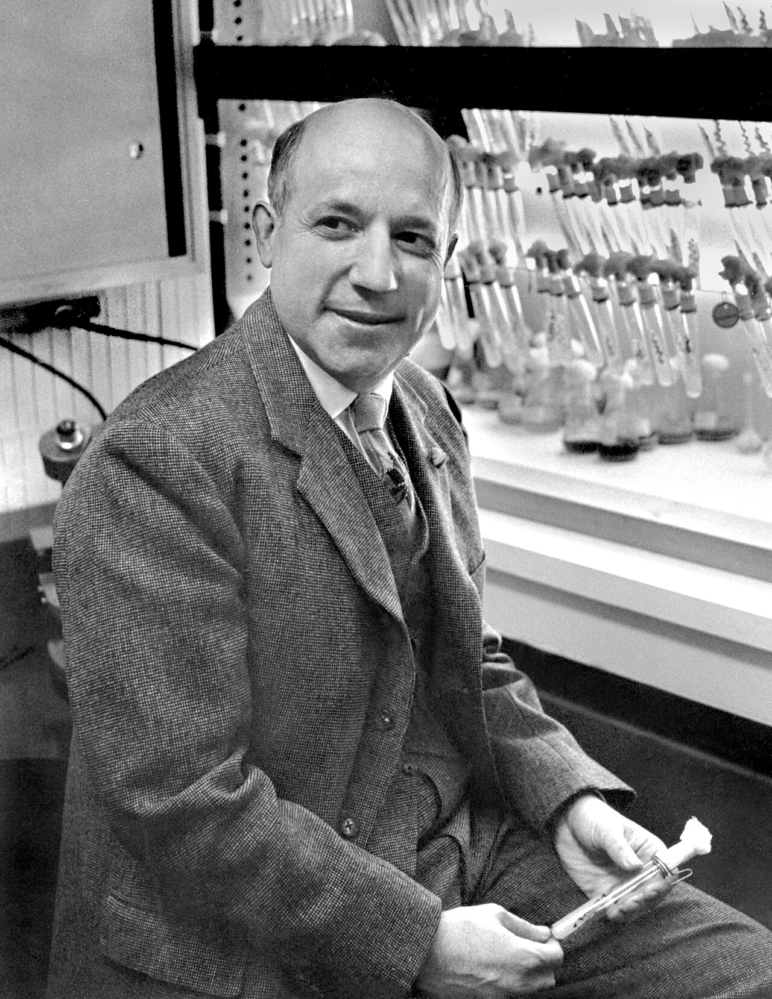

光合作用与能量转化（二）：光合作用的原理
本期导读
光合作用与能量转化（二） · 光反应与暗反应

视频原话 · 导读3 句
- 同学们好！这节课梳理人教版必修一第五章第四节的第二部分——光合作用的原理。8.0s
- 高考常考探索历程中的经典实验、光反应和暗反应，以及条件骤变时物质含量的变化。8.5s
- 我们按七个考点梳理，每个考点都讲清楚怎么考、怎么做。5.6s
探索光合作用原理01#
- 1希尔离体叶绿体 ＋ 铁盐等氧化剂，光照下释放 O2（希尔反应）
- 2鲁宾和卡门18O 分别标记 H2O 和 CO2 → O2 全部来自水
- 3阿尔农光照下叶绿体合成 ATP，总与水的光解相伴随
- 4卡尔文14C 标记 CO2 → 探明碳的转移途径（卡尔文循环）
易错
18O 是稳定同位素，无放射性；14C 有放射性
视频原话5 句
- 考点一，探索光合作用原理的实验。希尔发现，离体叶绿体悬浮液中加入铁盐等氧化剂，光照下能释放氧气，这叫希尔反应。12.4s
- 鲁宾和卡门用18O分别标记H2O和CO2，证明光合作用释放的氧气全部来自水。8.4s
- 阿尔农发现，光照下叶绿体可以合成ATP，并且这一过程总是与水的光解相伴随。8.1s
- 卡尔文用14C标记的CO2，探明了CO2中的碳转化为有机物中碳的途径，叫卡尔文循环。9.6s
- 易错：18O是稳定同位素，没有放射性；14C有放射性。6.3s
光合作用总反应式02#
CO2 + H2O光能⟶叶绿体(CH2O) + O2
利用光能，在叶绿体中把 CO2 和水转化成储存着能量的有机物，并释放 O2
解题方法
箭头上注明光能、叶绿体；产物 O2 中的氧全部来自水
视频原话3 句
- 考点二，光合作用的总反应式：CO2和H2O，在光能和叶绿体的作用下，生成糖类和O2。9.3s
- 也就是绿色植物通过叶绿体，利用光能，把CO2和水转化成储存着能量的有机物，并且释放出O2。10.1s
- 解题方法：箭头上注明光能和叶绿体；产物O2中的氧全部来自水。7.1s
光反应03#
- 1场所类囊体薄膜；条件：光、色素、酶
- 2水的光解H2O → O2 ＋ H+
- 3NADPH 形成NADP+ ＋ H+ → NADPH
- 4ATP 形成ADP ＋ Pi → ATP
- 5能量变化光能 → ATP 和 NADPH 中的化学能
易错
O2 释放到外界或用于呼吸；ATP 和 NADPH 用于暗反应
视频原话4 句
- 考点三，光反应。场所：类囊体薄膜；条件：光、色素和酶。7.2s
- 物质变化：水的光解，产生O2和H+；NADP+与H+结合形成NADPH；ADP和Pi形成ATP。10.8s
- 能量变化：光能转化为ATP和NADPH中的化学能。5.2s
- 易错：光反应产生的O2释放到外界或用于呼吸；ATP和NADPH则用于暗反应。8.1s
暗反应04#
- 1场所叶绿体基质；有光无光都能进行
- 2CO2 的固定CO2 ＋ C5 → 2C3
- 3C3 的还原2C3 → (CH2O) ＋ C5（需 ATP、NADPH）
- 4能量变化ATP、NADPH 中的化学能 → 糖类等有机物中的化学能
易错
暗反应不是只在黑暗中进行；没有光，光反应停止，暗反应很快也停止
视频原话5 句
- 考点四，暗反应。场所：叶绿体基质；有光无光都能进行，但需要光反应提供的ATP和NADPH。9.7s
- CO2的固定：CO2与C5结合，形成两个C3分子。6.1s
- C3的还原：在ATP和NADPH的作用下，C3被还原为糖类，同时再生出C5。8.0s
- 能量变化：ATP和NADPH中的化学能，转化为储存在糖类等有机物中的化学能。7.7s
- 易错：暗反应不是只在黑暗中进行；没有光，光反应停止，暗反应也会很快停止。8.1s
光反应与暗反应联系05#
解题方法
光反应 → 暗反应：ATP、NADPH；暗反应 → 光反应：ADP、Pi、NADP+；相互依存
视频原话3 句
- 考点五，光反应与暗反应的联系。光反应为暗反应提供ATP和NADPH；暗反应为光反应提供ADP、Pi和NADP+。12.3s
- 两者相互依存、紧密联系，是一个统一的整体。4.8s
- 解题方法：记住物质流向——ATP、NADPH从类囊体流向基质；ADP、Pi、NADP+从基质流回类囊体。11.0s
条件骤变时的含量06#
| 条件变化 | C3 | C5 | ATP 和 NADPH |
|---|---|---|---|
| 光照减弱 | 增加 | 减少 | 减少 |
| CO2 供应减少 | 减少 | 增加 | 增加 |
解题方法
抓 C3、C5 的来路和去路：条件只改变其中一条路，另一条暂时不变 → 推出增减
视频原话3 句
- 考点六，条件骤变时物质含量的变化。光照减弱：ATP和NADPH减少，C3的还原变慢，所以C3增加、C5减少。12.3s
- CO2供应减少：CO2的固定变慢，C3减少、C5增加；ATP和NADPH消耗减少，含量增加。10.1s
- 解题方法：抓住C3和C5的来路和去路——条件改变只影响其中一条路，另一条暂时不变，就能推出增减。10.2s
化能合成作用07#
- NH3
- 氧化 →HNO2
- 氧化 →HNO3两步氧化释放能量
- 利用化学能 →CO2 + H2O → 糖类
自养生物
能用无机物合成有机物：绿色植物、硝化细菌
异养生物
只能利用现成的有机物：人、动物、真菌、大多数细菌
易错
硝化细菌是自养生物，利用的是化学能而不是光能；原核生物，无叶绿体
视频原话4 句
- 考点七，化能合成作用。少数细菌利用体外环境中某些无机物氧化时释放的能量来制造有机物，叫化能合成作用。11.5s
- 例如硝化细菌，能将土壤中的氨氧化成亚硝酸，进而氧化成硝酸，利用释放的化学能，把CO2和水合成糖类。11.0s
- 能用无机物合成有机物的是自养生物，如绿色植物、硝化细菌；只能利用现成有机物的是异养生物，如人、动物、真菌。11.6s
- 易错：硝化细菌是自养生物，但利用的是化学能，不是光能；它是原核生物，没有叶绿体。9.0s
易错速查✓
先自己判断，再点按钮查看对错与解析。
- 1鲁宾和卡门证明O2中的氧来自CO2说法错误：O2中的氧全部来自水
- 2光反应的场所是叶绿体基质说法错误：场所是类囊体薄膜
- 3暗反应只能在黑暗中进行说法错误：有光无光都能进行
- 4突然停止光照，短时间内C3含量增加说法正确。
- 5光反应为暗反应提供ATP和NADPH说法正确。
- 6硝化细菌利用光能把CO2合成有机物说法错误：利用无机物氧化释放的化学能
看来路和去路，推C3、C5的增减！
视频原话 · 易错速查5 句
- 最后，用六道判断题检验一下。3.6s
- 判断一？错，O2中的氧全部来自水。判断二？错，光反应在类囊体薄膜上。9.3s
- 判断三？错，暗反应有光无光都能进行。判断四？对。7.0s
- 判断五？对。判断六？错，利用的是化学能。6.2s
- 七个考点串成一条线：看来路和去路，推C3、C5的增减。我们下期再见！7.8s
图片来源
图片来源：Wikimedia Commons —— Photolab《Melvin Calvin》Public domain
Photolab, Public domain